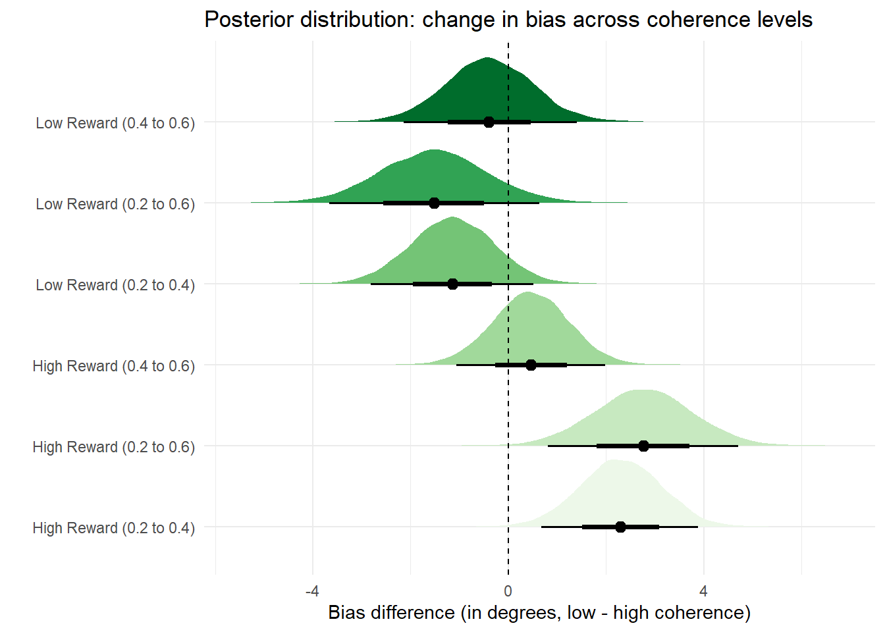
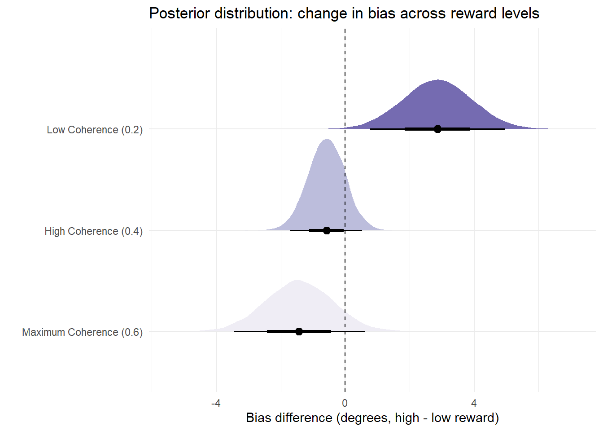
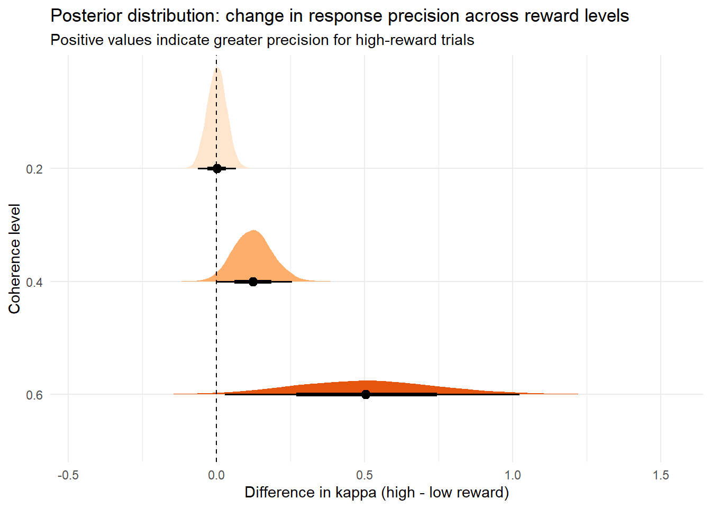
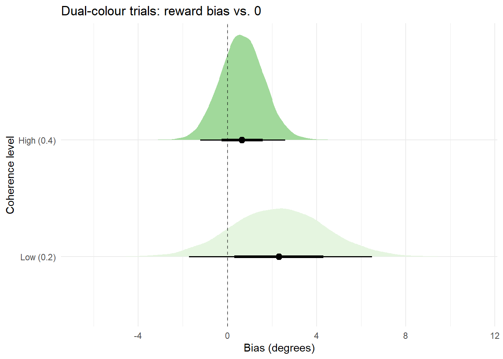

Response bias modelling
After Friday’s meeting I had a think about how we might model response bias in the dot motion task. At the moment there are a few problems with our analytic approach:
It’s a compromise. We either exclude a lot of the data (restricting range to ±90° for ANOVA) or end up with an artificial metric that’s quite difficult to interpret (Rangelov et al. regression approach)
It’s tough to answer questions about how responses are distributed, as opposed to simply looking at their means. As discussed, this is important if we want to assess whether people are guessing more on low-reward trials.
It doesn’t work very well for our minority trial types (catch trials with 60% coherence, and dual-colour trials which pit high-reward and low-reward dot clouds against each other). Data per participant is quite sparse for these trial types, so they’re less appropriate for a straightforward ANOVA technique where we take condition means per participant.
I went back to the drawing board and realised that we can simply model circular responses directly in the R package brms. This solves all of our problems:
| Problem | brms modelling solution |
| Compromise (dropping data or using an artificial metric which isn’t directly interpretable) | Uses all data while yielding a directly intepretable parameter (mu, which is essentially the distribution’s mean) |
| No info about response distribution | Can also model effects of task condition and random effects by participant for distribution (kappa, concentration of responses) |
| Problems with sparse trial-level data for rare trial types | Partial pooling: model participants as offsets from latent population parameters. Because the model automatically downweights noisy participants and ‘shrinks’ extreme individual estimates toward the group mean, we can extract a more reliable signal from sparse trials than we could with e.g. ANOVA. |
These models are based off the von Mises distribution (circular equivalent of the normal distribution), which is defined by two parameters:
mu: the location parameter (where the distribution peaks)
kappa: the concentration parameter (how tightly clustered the data are around the peak of the distribution; like an inverse of dispersion measures such as SD)
I’ve fit two models to the data in brms, as follows:
For core and catch trials (i.e., 3 x 2 structure: 20%/40%/60% coherence x low/high reward):
response bias (mu) ~ reward * coherence + (reward * coherence | participant)
kappa ~ reward * coherence + (reward * coherence | participant)
For dual-colour trials (i.e., 1 x 2 structure: one high-reward and one low-reward dot cloud x 20%/40% coherence)
response bias (mu) ~ coherence + (coherence | participant)
kappa ~ coherence + (coherence | participant)
1 Core and catch trials: reanalysis
Core trials made up the majority (90%; 432/480 trials) of the task. They’re what we’ve discussed in meetings so far: participants saw an equal number of trials from each cell of our 2 x 2 design (2 reward levels: low, high; 2 coherence levels: 20%, 40%).
Catch trials (those with coherence 60%) comprised 5% of the total number of trials in the experiment (24/480), with an equal number of catch trials in each block. There were an equal number of high-reward and low-reward catch trials. In theory, these trials are so easy that we shouldn’t be seeing any reward-related bias in responding.
Because catch trials basically add another level of coherence to the core 2 x 2 design, they can be directly added into a combined model. One thing to keep in mind is that estimation will often be less precise for 60% coherence trials as the model is informed by less data from this trial type.
1.1 Does the model fit?
Let’s first visually inspect how the model is fitting relative to the observed data.
Overall, model fit is looking fairly good. The key concern is that it’s slightly underestimating the heights of the distributions’ peaks, and for 40% coherence the ‘shoulders’ are a bit too wide. Both of these things suggest we should tweak priors for response precision, and/or fit a mixture model that accounts for guessing also. For now, this fit is near enough that I think we can take the following results as indicators of what we’d expect to see from a mixture modelling approach.
1.2 Is a response bias present?
First let’s see how the model has estimated mu (mean) in each reward x coherence condition.
| Reward | Coherence | Median Bias | 95% Lower | 95% Upper | P(>0) |
|---|---|---|---|---|---|
| hi | 0.2 | 4.36 | 2.16 | 6.51 | 1.00 |
| hi | 0.4 | 2.06 | 0.26 | 3.83 | 0.99 |
| hi | 0.6 | 1.61 | -0.52 | 3.62 | 0.93 |
| lo | 0.2 | 1.50 | -0.65 | 3.64 | 0.91 |
| lo | 0.4 | 2.64 | 0.91 | 4.37 | 1.00 |
| lo | 0.6 | 3.03 | 0.74 | 5.29 | 1.00 |

Takeaways:
When coherence is low (20%), there is a credible response bias for high-value trials but not low-value ones
When coherence is medium (40%), there is a credible (but small) response bias for both high and low-value trials.
When coherence is high (60%), there is no longer a response bias for high-value trials. Conversely, the response bias for low-value trials persists.
1.3 How does bias change with coherence and reward?
The nice thing about this modelling approach is that we can see the posterior distribution for the size of changes to response bias across levels of coherence and reward (i.e., the range of plausible values for how much the response has actually shifted). In these graphs, the plotted point is the median difference and the whiskers are the 66% (thick) and 95% (thin) credible intervals.
1.3.1 Effect of coherence
Firstly, let’s take a look at how coherence affects response bias within each level of reward.

| Reward Level | Median Diff | Lower 95% | Upper 95% | P(Diff) |
|---|---|---|---|---|
| hi coherence0.2 - hi coherence0.4 | 2.30 | 0.68 | 3.89 | 1.00 |
| hi coherence0.2 - hi coherence0.6 | 2.76 | 0.81 | 4.70 | 1.00 |
| hi coherence0.4 - hi coherence0.6 | 0.46 | -1.06 | 1.99 | 0.73 |
| lo coherence0.2 - lo coherence0.4 | -1.14 | -2.81 | 0.51 | 0.91 |
| lo coherence0.2 - lo coherence0.6 | -1.53 | -3.67 | 0.63 | 0.92 |
| lo coherence0.4 - lo coherence0.6 | -0.40 | -2.15 | 1.40 | 0.67 |
Takeaways:
For low-reward trials, the bias is stable: it doesn’t reliably change across any of the coherence comparisons
For high-reward trials, the exceptional condition is low coherence: bias in this condition is credibly higher than in either the medium or high coherence condition. Note that the bias doesn’t credibly differ across the two higher-coherence conditions.
1.3.2 Effect of reward

| Coherence Level | Median Diff | Lower 95% | Upper 95% | P(Diff) |
|---|---|---|---|---|
| hi coherence0.6 - lo coherence0.6 | -1.43 | -3.46 | 0.61 | 0.92 |
| hi coherence0.4 - lo coherence0.4 | -0.57 | -1.70 | 0.53 | 0.85 |
| hi coherence0.2 - lo coherence0.2 | 2.86 | 0.78 | 4.95 | 1.00 |
Takeaways:
When coherence is low, response bias is credibly larger for high-reward trials than low-reward ones
When coherence is medium and high, there is no credible difference in response bias based on reward level, but the trend suggests the bias may be inverting (i.e., crossover interaction: as coherence increases, participants show more bias on low-value trials than high-value ones)
1.4 Does response precision change across trial types?
Next, let’s see how the model has estimated kappa (response precision) in each reward x coherence condition.

| Coherence | Reward | Median Kappa | 95% Lower | 95% Upper |
|---|---|---|---|---|
| 0.2 | hi | 0.599 | 0.483 | 0.742 |
| lo | 0.597 | 0.486 | 0.737 | |
| 0.4 | hi | 1.491 | 1.204 | 1.853 |
| lo | 1.370 | 1.115 | 1.684 | |
| 0.6 | hi | 2.677 | 1.983 | 3.598 |
| lo | 2.166 | 1.578 | 2.973 |
I won’t do the full set of pairwise contrasts here as we don’t care about most of them. As expected, there’s a clear effect of coherence upon kappa (high-coherence trials produce a less dispersed distribution of responses).
Note also that the model has found it harder to estimate precision for the catch (60% coherence) trials. This may be due to the lower amount of data available, but looking at the posteriors for 40% coherence trials, it could also be due to identifiability issues when estimating kappa for tighter distributions (i.e., once a distribution is already ‘spiked,’ even massive increases in kappa result in almost no visible change to the response spread).
However, a key question remains: within each level of coherence, is responding less precise for low-reward trials? In other words, are people making less of an effort when they aren’t going to win big?

| Coherence | Median Diff | Lower 95% | Upper 95% | P(hi > lo) |
|---|---|---|---|---|
| 0.2 | 0.002 | -0.062 | 0.066 | 0.527 |
| 0.4 | 0.123 | 0.000 | 0.256 | 0.975 |
| 0.6 | 0.504 | 0.029 | 1.024 | 0.981 |
So yes: while there’s no difference in response precision for low-coherence trials, it does appear that people are trying less hard for low-reward trials when coherence is higher.
1.5 Random effects
It’s also worth checking the random intercepts for mu (mean) from the model. While these aren’t random slopes (i.e., they don’t vary by task condition), they do give an indicator of individual propensity to demonstrate response bias on this task. Combined with the random intercepts for kappa (response precision), we can do a quick visual check: should we be concerned that the biases we’re seeing are driven by individuals whose responses are more imprecise?

In this graph, we see ‘baseline bias’: the model intercept for bias with each participant’s offset added. Overall, if anything, it looks like people who are poor responders tend to have baseline biases close to 0, which is consistent with the idea that they’re guessing more.
2 Dual-colour trials: new analysis
Finally, let’s analyse the dual-colour trials (those where participants saw one high-reward and one low-reward patch). These trials comprised 5% of the experiment (24/480) but only appeared in the second half of blocks, by which time participants should have been well-versed in the colour-reward contingencies for the task. Participants didn’t get score feedback for this trial type until the end of the experiment, when they learnt their cumulative score for these trials. There were an equal number of high-coherence and low-coherence dual-colour trials.
2.1 Is a response bias present?
When we talk about a response bias for dual-colour trials, I mean that the participant’s response was biased towards the high-reward motion direction rather the low-reward one. First let’s see how the model has estimated mu (mean) in each coherence condition.

| Coherence | Median Bias | 95% Lower | 95% Upper | P(>0) |
|---|---|---|---|---|
| 0.2 | 2.31 | -1.73 | 6.48 | 0.87 |
| 0.4 | 0.65 | -1.22 | 2.60 | 0.75 |
Neither mean differs credibly from 0. It seems plausible that if we had more data, we might see a reward bias when coherence is low, but the posterior distribution is pretty wide because there are so few datapoints and performance under low coherence is inherently more noisy.
2.2 How does response bias change across coherence levels?
Although it seems unlikely that a credible change will be detected given how wide the posterior distribution for low-coherence trials is, let’s check anyway.

| Contrast | Median Diff | Lower 95% | Upper 95% | P(Direction) |
|---|---|---|---|---|
| High - low coherence | -1.63 | -6.11 | 2.68 | 0.76 |
As expected, we don’t have evidence of a credible difference in response bias across coherence levels here.
2.3 Does response precision change?
Kappa (response precision) for dual-colour trials is not so interesting, as the only factor being varied is coherence. As expected, response precision is much higher for high-coherence trials than low-coherence ones.

| Coherence | Median Kappa | 95% Lower | 95% Upper |
|---|---|---|---|
| 0.2 | 0.552 | 0.389 | 0.757 |
| 0.4 | 1.750 | 1.308 | 2.290 |